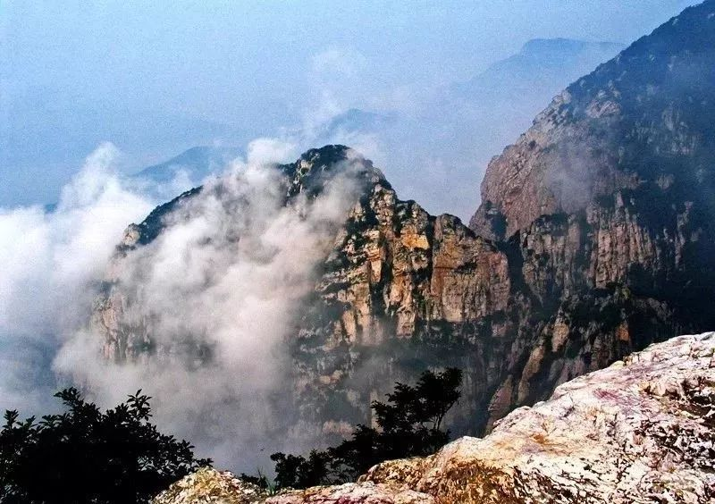
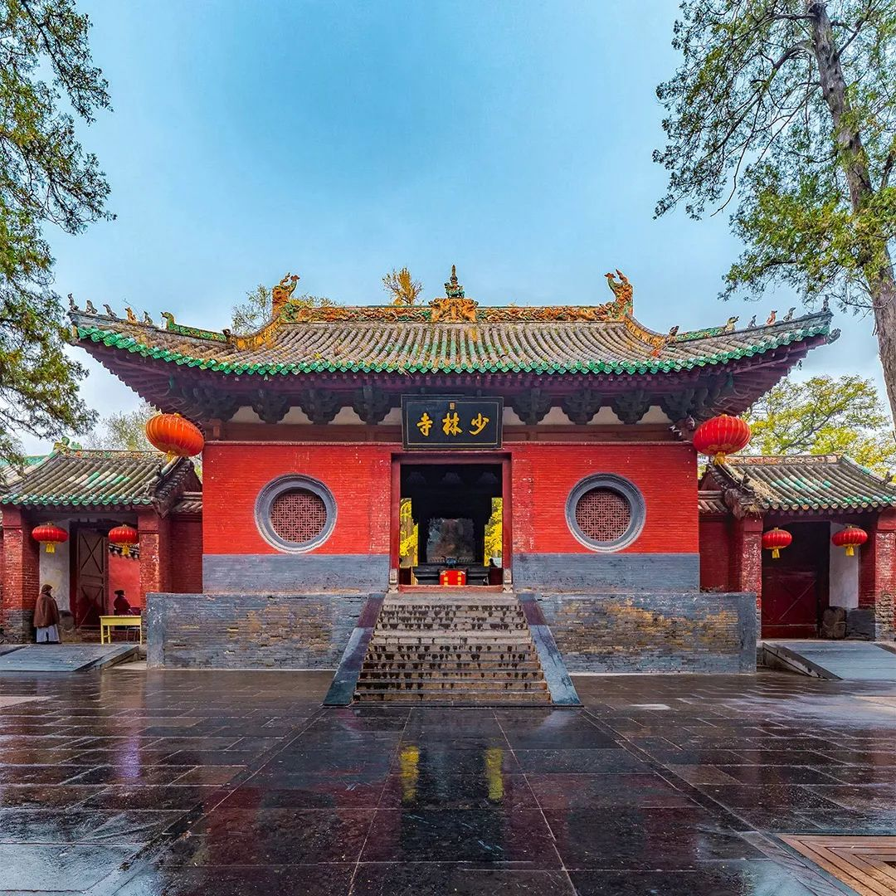
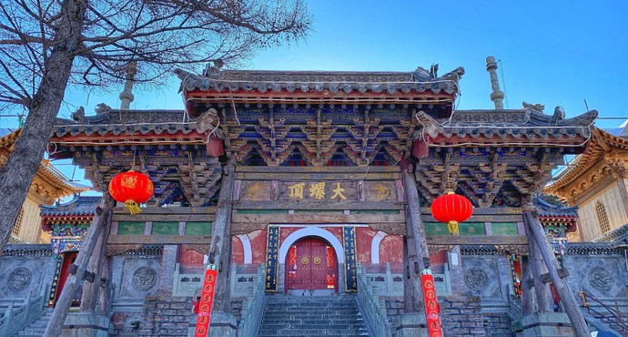
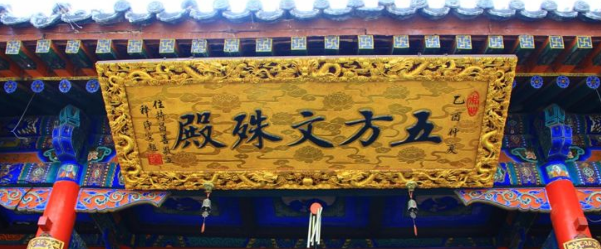
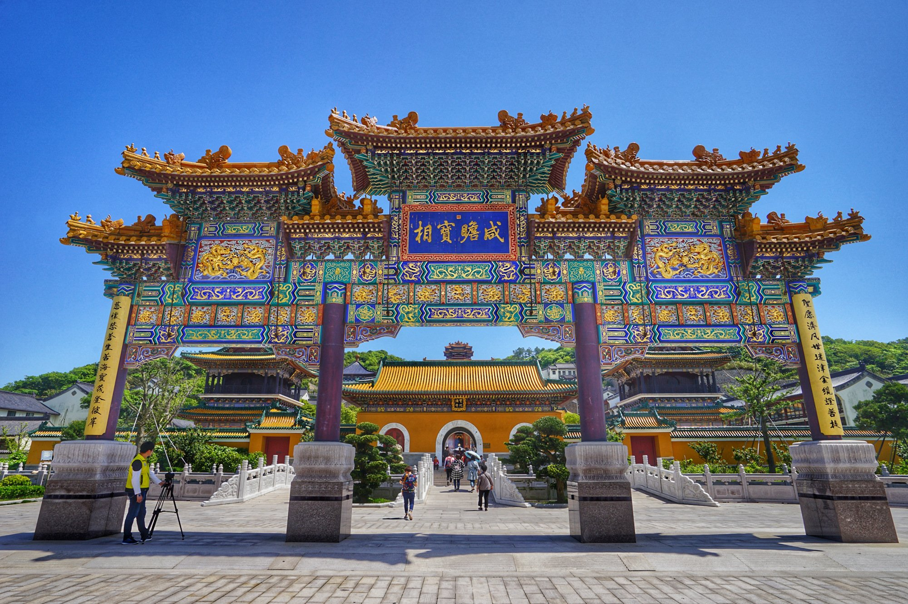
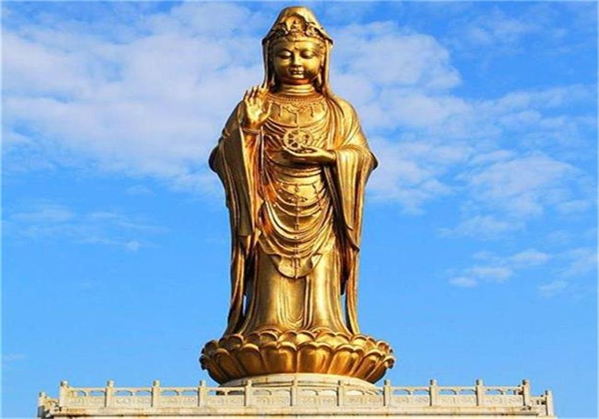

Foot Print
Introduction
In this page I will display some of tourist spots I have ever been.
Mountain Song is where Shaolin Temple is located. (Hover on the image to see more)


Mountain Wutai is regarded as the home of Mañjuśrī, the Bodhisattva of wisdom. (Hover on the image to see more)


Mountain Putuo is the awakening position of bodhisattva Guanyin. (Hover on the image to see more)


Santorini island is famous for the incredible sunset. (Hover on the image to see more)